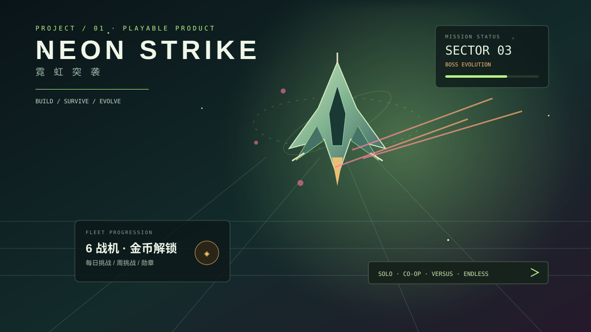

PROJECT / 01PLAYABLE · 2.0SECTOR 03BUILD / SURVIVE / EVOLVE
NEON STRIKE · 霓虹突袭
一场从“躲开弹幕”开始、最终成长为“经营自己的战机舰队”的霓虹空战。战机、金币、每日挑战和 Boss 构筑，让每次重开都有下一步目标。
单人 / 双人协作 / 竞速对决 / 无尽深空
查看完整项目档案
✈️ NEON STRIKE · 霓虹突袭 / 从小游戏到可持续游玩的飞行系统
项目定位
这是一个持续迭代的 HTML5 飞行射击产品。第一层是 30 秒内可以理解的移动、射击与躲避；第二层是战机选择、局内改装、连击与擦弹；第三层是金币经济、每日挑战、周挑战和勋章收集，让玩家在一局结束后仍然有下一次出击的理由。
当前体验闭环
- 选择战机：从游隼、磐石、幽灵开始，靠金币或成就解锁极光、泰坦、新星。
- 进入航区：敌机编队、精英机和弹幕压力随航区推进，Boss 接敌前会明确预警。
- 构筑火力：升级时三选一，组合僚机阵列、电弧传导、引力捕获、武器强化和生存能力。
- 带着成绩回到机库：金币、击杀、最高连击、擦弹和模式纪录被保存，继续完成每日与周挑战。
01 / 战机与成长
- 6 架差异化战机：游隼、磐石、幽灵、极光、泰坦、新星，分别强调均衡、装甲、机动、能量、防御与终局火力。
- 战机专属被动：护盾自愈、擦弹收益、低血量减伤、高连击射速等效果直接改变操作手感。
- 金币经济：击落敌机、击破旗舰、完成出击和任务都会获得金币；战机购买永久写入浏览器存档。
- 每日 / 周挑战：击杀、擦弹、连击、完成远征等目标提供额外金币，让重复游玩有明确方向。
02 / 战斗系统
- 4 种武器：脉冲炮、散射枪、激光束、追踪导弹，支持切换与局内升级。
- 连击倍率最高 4 倍；擦弹会加分、回复护盾并减少技能冷却。
- 相位冲刺、电磁脉冲、过载射击与炸弹形成“走位 / 清场 / 爆发”的决策链。
- Boss 拥有环形扩散、锁定射击、螺旋弹幕、弹墙留缝和双重螺旋等模式，攻击前显示意图与安全区。
03 / 模式与留存
- 远征行动：穿越 3 个航区，完成一局完整旅程。
- 无尽深空：Boss 持续进化，挑战个人最高阶段。
- 双人协作：本地双人同屏，航区结算提供队友救援。
- 竞速对决：90 秒竞分，击杀与生存共同决定结果。
- 勋章展馆：记录首杀、无伤 Boss、连击、合作、无尽阶段等长期目标。
04 / 技术实现
- Canvas 负责高频战斗渲染，DOM 负责机库、HUD、设置和可访问文本。
- 固定步长主循环、粒子上限、对象数组快照遍历和轻量化碰撞，保证弹幕密集时仍然可控。
- Web Audio API 生成射击、升级、受击和 Boss 警告音效；音乐、音效、震屏与粒子可独立设置。
- 支持键盘、鼠标拖动、触屏拖动与移动端技能按钮，失焦自动暂停，存档兼容旧版本。
05 / 设计取舍
我借鉴了高口碑飞行射击作品中的“短局实验、清晰弹幕、差异化战机、构筑选择和无尽挑战”，但把它们重新组织成适合个人网站展示与持续迭代的轻量产品。重点不是单纯堆敌机，而是让玩家明确知道：下一次出击要解锁什么、练习什么、购买什么。
06 / 体验入口
打开可玩版本 ↗https://1nny2.github.io/game1/项目档案飞机大战技术设计文档.md / 迭代记录保留在项目目录